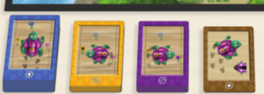

Preparação:
1 narrador e 1 jogador:

1 narrador e 4 jogadores:

Cada jogador separará o seu baralho em 4 partes:
- 18 cartas azuis de mover em frente
- 8 cartas amarelos de mover para a esquerda
- 8 cartas roxas de mover para a direita
- 1 carta castanha de BUG

Bases para as crianças:
- Cada jogador controla uma Tartaruga robô e quem chegar a uma jóia ganha!
- Quando for a vez do jogador, pegue em uma das cartas de instruções
e meta-a à sua frente, ao lado de quaisquer cartas que tenha metido lá anteriormente.
- Quem mexe nas tartarugas é o "narrador" que fará o que estará dito nas cartas,
não a criança.
- Se for a sua vez e mudar de ideias grite "BUG" e o "narrador"
irá pôr a sua carta de volta e porá a sua peça na posição anterior de modo a poder fazer uma jogada diferente.
Como mover as tartarugas:
- Mover para a direita: Vire a tartaruga 90 graus para a direita. Não mude de casa.

- Mover para a esquerda: Vire a tartaruga 90 graus para a esquerda. Não mude de casa.

- Passo em frente: Mova a peça uma casa na direção para que está a apontar

Início do jogo:
- O jogador mais novo é oque joga primeiro, após essa jogada o jogo prossegue no
sentido do relógio
- Se a tartaruga se mover e o quadrado à sua frente estiver ocupado por uma parede,
o fim do tabuleiro ou outro jogador, então a tartaruga não se move.
- As crianças podem usar a carta BUG as vezes que quiserem, mas apenas reverte a jogada a ser efetuada nesse momento.
Assim que o próximo jogador joga já não há volta atrás.
- Muito importante: O "narrador" deve fazer barulho enquanto move as tartarugas!
O primeiro jogo termina quando todos recebem a sua jóia.
Desafios Desbloqueados:
A longo do jogo pode-se ir desbloqueando obstáculos e desafios novos, após a sua desbloqueação, podem ser
utilizados em todos os jogos que venham a jogar no futuro.
- Paredes de gelo: Faça um labirinto de gelo! O jogador pode colocar paredes de gelo no tabuleiro antes de o jogo começar.
Começe apenas com algumas. As tartarugas não conseguem atravessar as paredes logo se o jogador tentar ultrapassá-las
começe a fazer barulhos. O jogador gritará "BUG" e retirará a carta e tentará outra jogada diferente.
As Paredes de gelo desbloqueiam-se após se ganhar o primeiro jogo.

- Lasers:Derretem as Paredes de Gelo! As cartas Lasers derretem uma parede de gelo em frente à tartaruga do jogador.
Quando todo o gelo estiver derreito vire-o ao contrário, pois passa a ser apenas uma poça onde as tartugas podem passar normalmente.
Se a tartaruga estiver na direção de algo que nao seja uma Parede de gelo ao tentar utilizar a carta Laser entao faça barulhos esquisitos de modo a que o jogador use a sua carta BUG e
altere a sua jogada.
Os Lasers desbloqueiam-se após duas vitórias.

- Paredes de Pedra:Invulneráveis! São à prova de Lasers.Pode-se construir paredes de Pedra e Gelo de modo
a incentivar a criatividade dos jogadores.
Desbloqueiam-se após ganhar dois jogos com Lasers.

- Caixas:As caixas podem ser empurradas para a frente se não houver nada no lado contrário. Não há maneira de puxar as caixas por isso cuidado em prendê-las em cantos pois nesse caso ficarão
lá presas para sempre.
Desbloqueiam-se após três jogos ganhos com Paredes de Pedra.

- Jogada 3: Em vez de se jogar apenas uma carta de cada vez, passa-se a poder jogar 3. Após a sua jogada executa-se todas as 3 instruções das 3 cartas.
Se o jogador usar a carta "BUG" todas as 3 cartas são retiradas.
Desbloqueia-se quando todos os outros items já foram desbloqueados.